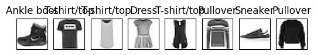
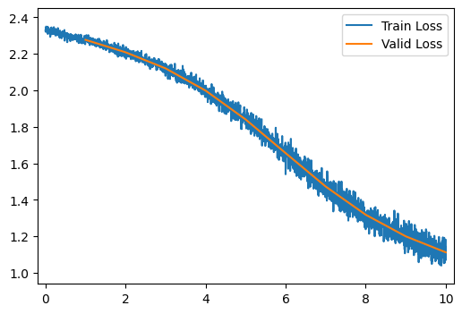
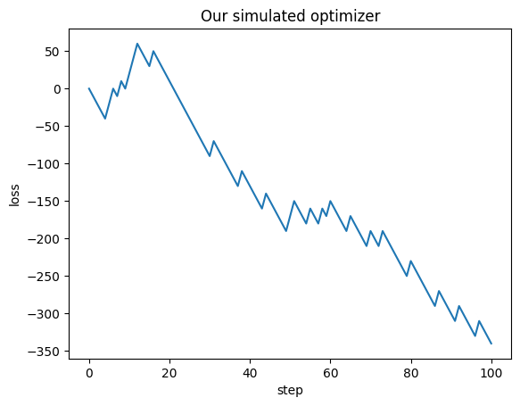
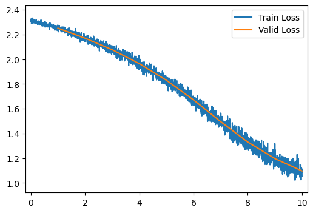
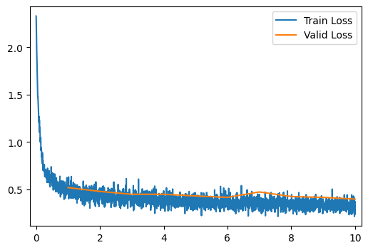
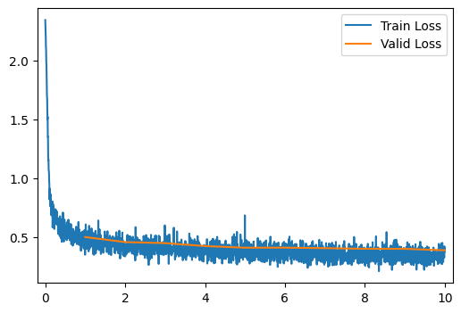
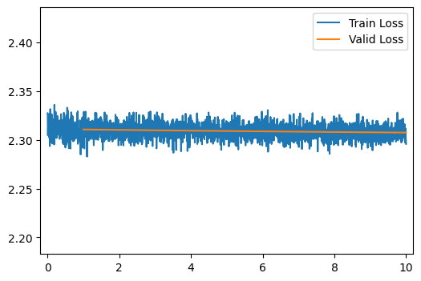
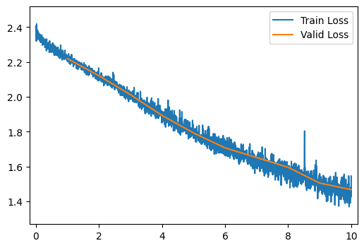
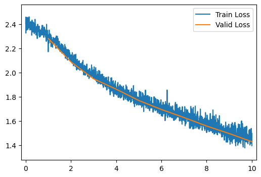
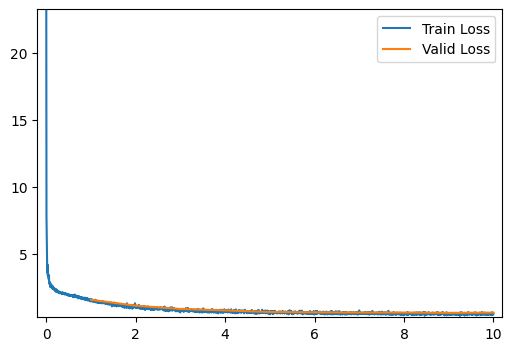

# This is the path that the dataset for this homework will be downloaded to.
# If you are running on the course server or Colab you can keep this line, if you are
# running on a personal computer, you may want to change this location.
data_path = '/tmp/data'Homework 8: Optimization and Normalization
Part 0: Enviornment Setup
For this homework and for the final project, you may find it useful to run your code with access to a sufficient GPU, which may allow your code to run faster (we will talk about why later in the course). If you do not have access to a powerful GPU on your personal computer (e.g. if you primarily use a laptop), then there are 2 options you may consider for using a remotely hosted GPU.
Note that some laptops may actually run this code faster than the course server, so you may want to try it first on your laptop regardless
Support Code
There are no problems in this section, but you should read and try to understand the code being shown. Make sure to run all the cells in this section as well.
Set Hyperparameters
import torch
import torch.nn as nn
from torch.utils.data import DataLoader
import numpy as np
from torchsummary import summary
from torchvision.datasets import FashionMNIST
from torchvision.transforms import Compose, Normalize, ToTensor
from fastprogress.fastprogress import master_bar, progress_bar
import matplotlib.pyplot as plt# Use the GPUs if they are available
device = "cuda" if torch.cuda.is_available() else "cpu"
print(f"Using '{device}' device.")
# Model hyperparameters
neurons_per_hidden_layer = [20] * 2
# Mini-Batch SGD hyperparameters
batch_size = 256
num_epochs = 10
learning_rate = 0.001
criterion = nn.CrossEntropyLoss()Using 'cpu' device.Prepare the Dataset
def get_fmnist_data_loaders(path, batch_size, valid_batch_size=0):
# Computing normalization constants for Fashion-MNIST (commented out since we only need to do this once)
# train_loader, valid_loader = get_fmnist_data_loaders(data_path, 0)
# X, _ = next(iter(train_loader))
# s, m = torch.std_mean(X)
# Data specific transforms
data_mean = (0.2860,)
data_std = (0.3530,)
xforms = Compose([ToTensor(), Normalize(data_mean, data_std)])
# Training data loader
train_dataset = FashionMNIST(root=path, train=True, download=True, transform=xforms)
# Set the batch size to N if batch_size is 0
tbs = len(train_dataset) if batch_size == 0 else batch_size
train_loader = DataLoader(train_dataset, batch_size=tbs, shuffle=True)
# Validation data loader
valid_dataset = FashionMNIST(root=path, train=False, download=True, transform=xforms)
# Set the batch size to N if batch_size is 0
vbs = len(valid_dataset) if valid_batch_size == 0 else valid_batch_size
valid_loader = DataLoader(valid_dataset, batch_size=vbs, shuffle=True)
return train_loader, valid_loader# Load the example dataset (Fashion MNIST)
train_loader, valid_loader = get_fmnist_data_loaders(data_path, batch_size)
print("Training dataset shape :", train_loader.dataset.data.shape)
print("Validation dataset shape :", valid_loader.dataset.data.shape)Downloading http://fashion-mnist.s3-website.eu-central-1.amazonaws.com/train-images-idx3-ubyte.gz
Downloading http://fashion-mnist.s3-website.eu-central-1.amazonaws.com/train-images-idx3-ubyte.gz to /tmp/data/FashionMNIST/raw/train-images-idx3-ubyte.gz100%|██████████| 26.4M/26.4M [00:27<00:00, 944kB/s] Extracting /tmp/data/FashionMNIST/raw/train-images-idx3-ubyte.gz to /tmp/data/FashionMNIST/raw
Downloading http://fashion-mnist.s3-website.eu-central-1.amazonaws.com/train-labels-idx1-ubyte.gz
Downloading http://fashion-mnist.s3-website.eu-central-1.amazonaws.com/train-labels-idx1-ubyte.gz to /tmp/data/FashionMNIST/raw/train-labels-idx1-ubyte.gz100%|██████████| 29.5k/29.5k [00:00<00:00, 510kB/s]Extracting /tmp/data/FashionMNIST/raw/train-labels-idx1-ubyte.gz to /tmp/data/FashionMNIST/raw
Downloading http://fashion-mnist.s3-website.eu-central-1.amazonaws.com/t10k-images-idx3-ubyte.gz
Downloading http://fashion-mnist.s3-website.eu-central-1.amazonaws.com/t10k-images-idx3-ubyte.gz to /tmp/data/FashionMNIST/raw/t10k-images-idx3-ubyte.gz100%|██████████| 4.42M/4.42M [00:03<00:00, 1.19MB/s]Extracting /tmp/data/FashionMNIST/raw/t10k-images-idx3-ubyte.gz to /tmp/data/FashionMNIST/raw
Downloading http://fashion-mnist.s3-website.eu-central-1.amazonaws.com/t10k-labels-idx1-ubyte.gz
Downloading http://fashion-mnist.s3-website.eu-central-1.amazonaws.com/t10k-labels-idx1-ubyte.gz to /tmp/data/FashionMNIST/raw/t10k-labels-idx1-ubyte.gz100%|██████████| 5.15k/5.15k [00:00<00:00, 25.5MB/s]Extracting /tmp/data/FashionMNIST/raw/t10k-labels-idx1-ubyte.gz to /tmp/data/FashionMNIST/raw
Training dataset shape : torch.Size([60000, 28, 28])
Validation dataset shape : torch.Size([10000, 28, 28])# Let's plot a few images as an example
num_to_show = 8
images = train_loader.dataset.data[:num_to_show]
targets = train_loader.dataset.targets[:num_to_show]
labels = [train_loader.dataset.classes[t] for t in targets]
fig, axes = plt.subplots(1, num_to_show)
for axis, image, label in zip(axes, images, labels):
axis.imshow(image.squeeze(), cmap="Greys")
axis.tick_params(left=False, bottom=False, labelleft=False, labelbottom=False)
axis.set_xticks([])
axis.set_yticks([])
axis.set_title(f"{label}")
Create a Neural Network
class Layer(nn.Module):
# This class will represent a basic neural network layer with a linear function
# and an activation (in this case ReLU)
def __init__(self, in_dimensions, out_dimensions):
super().__init__()
self.linear = nn.Linear(in_dimensions, out_dimensions)
self.activation = nn.ReLU()
def forward(self, x):
x = self.linear(x)
x = self.activation(x)
return x
class NeuralNetwork(nn.Module):
def __init__(self, layer_sizes, layer_class=Layer):
super(NeuralNetwork, self).__init__()
# The first "layer" just rearranges the Nx28x28 input into Nx784
first_layer = nn.Flatten()
# The hidden layers include:
# 1. a linear component (computing Z) and
# 2. a non-linear comonent (computing A)
hidden_layers = [
(layer_class(nlminus1, nl) if nlminus1 == nl else Layer(nlminus1, nl))
for nl, nlminus1 in zip(layer_sizes[1:-1], layer_sizes)
]
# The output layer must be Linear without an activation. See:
# https://pytorch.org/docs/stable/generated/torch.nn.CrossEntropyLoss.html
output_layer = nn.Linear(layer_sizes[-2], layer_sizes[-1])
# Group all layers into the sequential container
all_layers = [first_layer] + hidden_layers + [output_layer]
self.layers = nn.Sequential(*all_layers)
def forward(self, X):
return self.layers(X)Implement an Optimizer
class SGDOptimizer:
def __init__(self, parameters, lr=0.01):
# Set the learning rate
self.lr = lr
# Store the set of parameters that we'll be optimizing
self.parameters = list(parameters)
def step(self):
# Take a step of gradient descent
for ind, parameter in enumerate(self.parameters):
# Compute the update to the parameter
update = self.lr * parameter.grad
# Update the parameter: w <- w - lr * grad
parameter -= updateTrain Classifier
# Here we'll define a function to train and evaluate a neural network with a specified architecture
# using a specified optimizer.
def run_model(optimizer=SGDOptimizer,
layer_type=Layer,
number_of_hidden_layers=2,
neurons_per_hidden_layer=20,
learning_rate=0.001):
# Get the dataset
train_loader, valid_loader = get_fmnist_data_loaders(data_path, batch_size)
# The input layer size depends on the dataset
nx = train_loader.dataset.data.shape[1:].numel()
# The output layer size depends on the dataset
ny = len(train_loader.dataset.classes)
# Preprend the input and append the output layer sizes
layer_sizes = [nx] + [neurons_per_hidden_layer] * number_of_hidden_layers + [ny]
# Do model creation here so that the model is recreated each time the cell is run
model = NeuralNetwork(layer_sizes, layer_type).to(device)
t = 0
# Create the optimizer, just like we have with the built-in optimizer
opt = optimizer(model.parameters(), learning_rate)
# A master bar for fancy output progress
mb = master_bar(range(num_epochs))
# Information for plots
mb.names = ["Train Loss", "Valid Loss"]
train_losses = []
valid_losses = []
for epoch in mb:
#
# Training
#
model.train()
train_N = len(train_loader.dataset)
num_train_batches = len(train_loader)
train_dataiterator = iter(train_loader)
train_loss_mean = 0
for batch in progress_bar(range(num_train_batches), parent=mb):
# Grab the batch of data and send it to the correct device
train_X, train_Y = next(train_dataiterator)
train_X, train_Y = train_X.to(device), train_Y.to(device)
# Compute the output
train_output = model(train_X)
# Compute loss
train_loss = criterion(train_output, train_Y)
num_in_batch = len(train_X)
tloss = train_loss.item() * num_in_batch / train_N
train_loss_mean += tloss
train_losses.append(train_loss.item())
# Compute gradient
model.zero_grad()
train_loss.backward()
# Take a step of gradient descent
t += 1
with torch.no_grad():
opt.step()
#
# Validation
#
model.eval()
valid_N = len(valid_loader.dataset)
num_valid_batches = len(valid_loader)
valid_loss_mean = 0
valid_correct = 0
with torch.no_grad():
# valid_loader is probably just one large batch, so not using progress bar
for valid_X, valid_Y in valid_loader:
valid_X, valid_Y = valid_X.to(device), valid_Y.to(device)
valid_output = model(valid_X)
valid_loss = criterion(valid_output, valid_Y)
num_in_batch = len(valid_X)
vloss = valid_loss.item() * num_in_batch / valid_N
valid_loss_mean += vloss
valid_losses.append(valid_loss.item())
# Convert network output into predictions (one-hot -> number)
predictions = valid_output.argmax(1)
# Sum up total number that were correct
valid_correct += (predictions == valid_Y).type(torch.float).sum().item()
valid_accuracy = 100 * (valid_correct / valid_N)
# Report information
tloss = f"Train Loss = {train_loss_mean:.4f}"
vloss = f"Valid Loss = {valid_loss_mean:.4f}"
vaccu = f"Valid Accuracy = {(valid_accuracy):>0.1f}%"
mb.write(f"[{epoch+1:>2}/{num_epochs}] {tloss}; {vloss}; {vaccu}")
# Update plot data
max_loss = max(max(train_losses), max(valid_losses))
min_loss = min(min(train_losses), min(valid_losses))
x_margin = 0.2
x_bounds = [0 - x_margin, num_epochs + x_margin]
y_margin = 0.1
y_bounds = [min_loss - y_margin, max_loss + y_margin]
valid_Xaxis = torch.linspace(0, epoch + 1, len(train_losses))
valid_xaxis = torch.linspace(1, epoch + 1, len(valid_losses))
graph_data = [[valid_Xaxis, train_losses], [valid_xaxis, valid_losses]]
mb.update_graph(graph_data, x_bounds, y_bounds)
print(f"[{epoch+1:>2}/{num_epochs}] {tloss}; {vloss}; {vaccu}")
run_model()
[ 1/10] Train Loss = 2.3014; Valid Loss = 2.2766; Valid Accuracy = 18.7%
[ 2/10] Train Loss = 2.2435; Valid Loss = 2.2085; Valid Accuracy = 24.4%
[ 3/10] Train Loss = 2.1662; Valid Loss = 2.1201; Valid Accuracy = 28.7%
[ 4/10] Train Loss = 2.0617; Valid Loss = 1.9984; Valid Accuracy = 39.1%
[ 5/10] Train Loss = 1.9215; Valid Loss = 1.8403; Valid Accuracy = 42.8%
[ 6/10] Train Loss = 1.7482; Valid Loss = 1.6559; Valid Accuracy = 44.9%
[ 7/10] Train Loss = 1.5613; Valid Loss = 1.4729; Valid Accuracy = 48.9%
[ 8/10] Train Loss = 1.3903; Valid Loss = 1.3183; Valid Accuracy = 54.5%
[ 9/10] Train Loss = 1.2532; Valid Loss = 1.2001; Valid Accuracy = 58.4%
[10/10] Train Loss = 1.1504; Valid Loss = 1.1125; Valid Accuracy = 61.8%

[10/10] Train Loss = 1.1504; Valid Loss = 1.1125; Valid Accuracy = 61.8%Part 1: Expectation and Variance
To get a sense of how we might think about stochastic gradient descent, let’s imagine a very simple stochastic optimizer in a somewhat ideal world.
At each step our optimizer will have one of two possible outcomes:
- With a \(75\%\) chance (probability \(0.75\)), our optimizer works well and decreases the loss by \(10\).
- However with a \(25\%\) chance (probability \(0.25\)) our optimizer gets a bad result and increases the loss by \(20\).
The code below simulates a loss trace for this world.
loss_trace = [0]
for i in range(100):
if np.random.rand() < 0.75:
loss_trace.append(loss_trace[-1] - 10)
else:
loss_trace.append(loss_trace[-1] + 20)
plt.plot(loss_trace); plt.xlabel('step'); plt.ylabel('loss');
plt.title('Our simulated optimizer');
Q1
Assuming our loss starts at \(0\), (we’ll say \(L^{(0)} = 0\)). What is the expected value of the loss after \(100\) steps?
Answer
\[E\left[L^{(100)}\right] = 100 \cdot (-10 \cdot 0.75 + 20 \cdot 0.25) = 100 \cdot (-7.5 + 5) = 100 \cdot (-2.5) = -250\]
Q2
What is the variance of the loss after 100 steps?
Answer
We can use the following property: \[\text{Var}\left[L^{(100)}\right] = E \left[L^{(100)^2}\right] - E\left[L^{(100)}\right]^2\]
\[=E \left[((-10)^2 \cdot 0.75 + 20^2 \cdot 0.25)\right] - (-2.5)^2 = 75 + 100 -6.25=171.25\]
Part 2: Optimizers
In this part, we’ll implement and test some of the optimizers that we learned about in class.
Q3
Let’s start with the momentum optimizer. Recall that the update equations for stochastic gradient descent with momentum can be written as follows:
\[ \mathbf{v}^{(k+1)} \longleftarrow \beta \mathbf{v}^{(k)} + (1-\beta) \nabla_{\mathbf{w}} \textbf{Loss}(\mathbf{w}^{(k)}, \mathbf{x}_i, y_i)\] \[ \mathbf{w}^{(k+1)} \longleftarrow \mathbf{w}^{(k)} - \alpha v^{(k+1)}\]
Refer to the SGDOptimizer implementation above to understand how our optimizer works. At a high level our optimizer class will: - Maintain a list of the parameters of a model. - Provide a step() method to update the parameters according to the update equations.
As we saw last time, we assume that the optimizer is not responsible for computing gradients. When step is called, we assume each parameter knows the gradient of the loss with respect to itself. This value is stored in parameter.grad.
Fill in the implementation of MomentumOptimizer below, according to the update equations above.
Answer
class MomentumOptimizer(SGDOptimizer):
# Gradient descent with momentum
def __init__(self, parameters, lr=0.01, mu=0.9):
# Set the learning rate
self.lr = lr
# Set the momentum update rate
self.mu = mu
# Store the set of parameters that we'll be optimizing
self.parameters = list(parameters)
# Store the velocity for each parameter
self.velocity = [torch.zeros_like(param) for param in self.parameters]
def step(self):
# Take a step of gradient descent
for ind, parameter in enumerate(self.parameters):
# First update the velocity
#self.velocity[ind] = # YOUR CODE HERE
self.velocity[ind] = self.mu * self.velocity[ind] + (1 - self.mu) * parameter.grad
# Then compute the update to the parameter
#update = # YOUR CODE HERE
update = self.lr * self.velocity[ind]
# Finally update the parameter as before
parameter -= update Q4
Train and evaluate the model using the MomentumOptimizer by running the cell below. Do the results seem different from the SGDOptimizer? Why do you think this might be?
Answer
run_model(optimizer=MomentumOptimizer)
[ 1/10] Train Loss = 2.2821; Valid Loss = 2.2513; Valid Accuracy = 11.1%
[ 2/10] Train Loss = 2.2125; Valid Loss = 2.1699; Valid Accuracy = 19.4%
[ 3/10] Train Loss = 2.1233; Valid Loss = 2.0770; Valid Accuracy = 25.2%
[ 4/10] Train Loss = 2.0209; Valid Loss = 1.9646; Valid Accuracy = 33.2%
[ 5/10] Train Loss = 1.8966; Valid Loss = 1.8299; Valid Accuracy = 40.0%
[ 6/10] Train Loss = 1.7487; Valid Loss = 1.6712; Valid Accuracy = 53.6%
[ 7/10] Train Loss = 1.5789; Valid Loss = 1.4956; Valid Accuracy = 59.3%
[ 8/10] Train Loss = 1.4047; Valid Loss = 1.3305; Valid Accuracy = 61.5%
[ 9/10] Train Loss = 1.2535; Valid Loss = 1.1970; Valid Accuracy = 63.1%
[10/10] Train Loss = 1.1362; Valid Loss = 1.0972; Valid Accuracy = 65.3%

[10/10] Train Loss = 1.1362; Valid Loss = 1.0972; Valid Accuracy = 65.3%Q5
Now let’s try the RMSProp optimizer. Recall that the update equations for RMSProp can be written as follows:
\[ \mathbf{s}^{(k+1)} \longleftarrow \beta \mathbf{s}^{(k)} + (1-\beta) (\nabla_{\mathbf{w}} \textbf{Loss}(\mathbf{w}^{(k)}, \mathbf{X}, \mathbf{y}))^2\] \[ \mathbf{w}^{(k+1)} \longleftarrow \mathbf{w}^{(k)} - \alpha \frac{\nabla_{\mathbf{w}} \textbf{Loss}(\mathbf{w}^{(k)}, \mathbf{X}, \mathbf{y})}{\sqrt{\mathbf{s}^{(k+1)} + \epsilon}}\]
Fill in the implementation of RMSPropOptimizer below, according to the update equations above.
Answer
epsilon = 1e-7
class RMSPropOptimizer(SGDOptimizer):
# RMSProp Optimizer
def __init__(self, parameters, lr=0.01, beta=0.9):
# Set the learning rate
self.lr = lr
# Set the scale update rate
self.beta = beta
# Store the set of parameters that we'll be optimizing
self.parameters = list(parameters)
# Store any values that you'll need for RMSProp here
self.scale = [torch.zeros_like(param) for param in self.parameters]
# YOUR CODE HERE
def step(self):
# Take a step of gradient descent
for ind, parameter in enumerate(self.parameters):
# First compute any updates needed for RMSProp here
# YOUR CODE HERE
self.scale[ind] = self.beta * self.scale[ind] + (1 - self.beta) * (parameter.grad ** 2)
# Then compute the update to the parameter
update = self.lr * parameter.grad / torch.sqrt(self.scale[ind] + epsilon)# YOUR CODE HERE
# Finally update the parameter as before
parameter -= update Q6
Train and evaluate the model using the RMSPropOptimizer by running the cell below. Do the results seem different from the SGDOptimizer? Why do you think this might be?
Answer
run_model(optimizer=RMSPropOptimizer)
[ 1/10] Train Loss = 0.7218; Valid Loss = 0.5194; Valid Accuracy = 81.4%
[ 2/10] Train Loss = 0.4581; Valid Loss = 0.4794; Valid Accuracy = 82.5%
[ 3/10] Train Loss = 0.4166; Valid Loss = 0.4492; Valid Accuracy = 84.0%
[ 4/10] Train Loss = 0.3935; Valid Loss = 0.4493; Valid Accuracy = 83.7%
[ 5/10] Train Loss = 0.3775; Valid Loss = 0.4317; Valid Accuracy = 83.7%
[ 6/10] Train Loss = 0.3667; Valid Loss = 0.4164; Valid Accuracy = 84.8%
[ 7/10] Train Loss = 0.3556; Valid Loss = 0.4738; Valid Accuracy = 82.3%
[ 8/10] Train Loss = 0.3474; Valid Loss = 0.4258; Valid Accuracy = 84.7%
[ 9/10] Train Loss = 0.3407; Valid Loss = 0.4164; Valid Accuracy = 85.1%
[10/10] Train Loss = 0.3334; Valid Loss = 0.3984; Valid Accuracy = 85.4%

[10/10] Train Loss = 0.3334; Valid Loss = 0.3984; Valid Accuracy = 85.4%Q7
Finally let’s try the Adam optimizer. Recall that the update equations for Adam can be written as follows:
\[ \mathbf{v}^{(k+1)} \longleftarrow \beta_1 \mathbf{v}^{(k)} + (1-\beta_1) \nabla_{\mathbf{w}} \textbf{Loss}(\mathbf{w}^{(k)}, \mathbf{X}, \mathbf{y})\] \[ \mathbf{s}^{(k+1)} \longleftarrow \beta_2 \mathbf{s}^{(k)} + (1-\beta_2) (\nabla_{\mathbf{w}} \textbf{Loss}(\mathbf{w}^{(k)}, \mathbf{X}, \mathbf{y}))^2\] \[ \mathbf{w}^{(k+1)} \longleftarrow \mathbf{w}^{(k)} - \alpha \frac{\frac{\mathbf{v}^{(k+1)}}{(1-\beta_1^k)} }{\sqrt{\frac{\mathbf{s}^{(k+1)}}{(1-\beta_2^k)} + \epsilon}}\]
Fill in the implementation of AdamOptimizer below, according to the update equations above.
Answer
epsilon = 1e-7
class AdamOptimizer(SGDOptimizer):
# Adam optimizer
def __init__(self, parameters, lr=0.01, beta1=0.9, beta2=0.99):
# Set the learning rate
self.lr = lr
# Set the scale update rate
self.beta1 = beta1
self.beta2 = beta2
# Store the set of parameters that we'll be optimizing
self.parameters = list(parameters)
# Store any values that you'll need for Adam here
self.velocity = [torch.zeros_like(param) for param in self.parameters]
self.scale = [torch.zeros_like(param) for param in self.parameters]
# YOUR CODE HERE
def step(self):
# Take a step of gradient descent
for ind, parameter in enumerate(self.parameters):
# First compute any updates needed for Adam here
# YOUR CODE HERE
self.velocity[ind] = self.beta1 * self.velocity[ind] + (1 - self.beta1) * parameter.grad
self.scale[ind] = self.beta2 * self.scale[ind] + (1 - self.beta2) * (parameter.grad ** 2)
# Then compute the update to the parameter
update = self.lr * self.velocity[ind] / torch.sqrt(self.scale[ind] + epsilon)# YOUR CODE HERE
# Finally update the parameter as before
parameter -= update
Q8
Train and evaluate the model using the AdamOptimizer by running the cell below. Do the results seem different from the SGDOptimizer? Why do you think this might be?
Answer
run_model(optimizer=AdamOptimizer)
[ 1/10] Train Loss = 0.6790; Valid Loss = 0.4990; Valid Accuracy = 82.1%
[ 2/10] Train Loss = 0.4512; Valid Loss = 0.4561; Valid Accuracy = 83.5%
[ 3/10] Train Loss = 0.4187; Valid Loss = 0.4473; Valid Accuracy = 84.0%
[ 4/10] Train Loss = 0.3961; Valid Loss = 0.4225; Valid Accuracy = 84.8%
[ 5/10] Train Loss = 0.3824; Valid Loss = 0.4086; Valid Accuracy = 85.6%
[ 6/10] Train Loss = 0.3706; Valid Loss = 0.4090; Valid Accuracy = 85.0%
[ 7/10] Train Loss = 0.3617; Valid Loss = 0.4046; Valid Accuracy = 85.6%
[ 8/10] Train Loss = 0.3520; Valid Loss = 0.3994; Valid Accuracy = 85.7%
[ 9/10] Train Loss = 0.3450; Valid Loss = 0.3988; Valid Accuracy = 85.9%
[10/10] Train Loss = 0.3374; Valid Loss = 0.3863; Valid Accuracy = 86.2%

[10/10] Train Loss = 0.3374; Valid Loss = 0.3863; Valid Accuracy = 86.2%Part 2: Normalization and Residual Networks
Q9
Try training a 20 layer network by running the cell below. What do you notice happening? Why does this happen?
Answer
The model doesn’t learn at all! This could be because of vanishing/exploding gradients
run_model(number_of_hidden_layers=20)
[ 1/10] Train Loss = 2.3110; Valid Loss = 2.3107; Valid Accuracy = 10.0%
[ 2/10] Train Loss = 2.3105; Valid Loss = 2.3103; Valid Accuracy = 10.0%
[ 3/10] Train Loss = 2.3101; Valid Loss = 2.3099; Valid Accuracy = 10.0%
[ 4/10] Train Loss = 2.3097; Valid Loss = 2.3095; Valid Accuracy = 10.0%
[ 5/10] Train Loss = 2.3093; Valid Loss = 2.3091; Valid Accuracy = 10.0%
[ 6/10] Train Loss = 2.3089; Valid Loss = 2.3087; Valid Accuracy = 10.0%
[ 7/10] Train Loss = 2.3086; Valid Loss = 2.3084; Valid Accuracy = 10.0%
[ 8/10] Train Loss = 2.3083; Valid Loss = 2.3081; Valid Accuracy = 10.0%
[ 9/10] Train Loss = 2.3080; Valid Loss = 2.3078; Valid Accuracy = 10.0%
[10/10] Train Loss = 2.3077; Valid Loss = 2.3075; Valid Accuracy = 10.0%

[10/10] Train Loss = 2.3077; Valid Loss = 2.3075; Valid Accuracy = 10.0%Q10
Let’s try applying normalization, starting with Layer Normalization.
Assume we have a data matrix \(\mathbf{X} \in \mathbb{R}^{N \times d}\), (i.e. \(\mathbf{X}\) is an \(N \times d\) matrix), such that: \[N:\ \text{Number of observations}\] \[d:\ \text{Number of features}\] Then we can define layer normalization as a function that normalizes the rows of this matrix. We can define this function element-wise as: \[\text{LayerNorm}(\mathbf{X})_{ij} = \frac{\mathbf{X}_{ij} - \mathbf{\bar{x}}_i}{\sqrt{\mathbf{s}^2_{i} + \epsilon}}\] \[\mathbf{\bar{x}}_i = \frac{1}{d} \sum_{k=1}^d \mathbf{X}_{ik}, \quad \mathbf{s}^2_{i} = \frac{1}{d-1}\sum_{k=1}^d \big( \mathbf{X}_{ik} - \mathbf{\bar{x}}_i \big)^2\]
Complete the implementation of Layer Normalization below:
Answer
epsilon = 1e-7
class LayerNorm(nn.Module):
def __init__(self):
super().__init__()
def forward(self, x):
xmean = x.mean(dim=1, keepdims=True)
xvar = x.var(dim=1, keepdims=True)
return (x - xmean) / torch.sqrt(xvar + epsilon)
# Replace our Layer class with one that includes layer normalization
class LayerNormLayer(nn.Module):
def __init__(self, in_dimensions, out_dimensions):
super().__init__()
self.linear = nn.Linear(in_dimensions, out_dimensions)
self.layer_norm = LayerNorm()
self.activation = nn.ReLU()
def forward(self, x):
x = self.linear(x)
x = self.layer_norm(x)
x = self.activation(x)
return xQ11
Train and evaluate a 20-layer network with layer normalization by running the cell below. What changed from the run without layer normalization? Why?
Answer
Now the model learns! Layer normalization helped address the vanishing gradient problem.
run_model(number_of_hidden_layers=20, layer_type=LayerNormLayer)
[ 1/10] Train Loss = 2.2844; Valid Loss = 2.2191; Valid Accuracy = 18.4%
[ 2/10] Train Loss = 2.1701; Valid Loss = 2.1211; Valid Accuracy = 24.8%
[ 3/10] Train Loss = 2.0641; Valid Loss = 2.0120; Valid Accuracy = 30.7%
[ 4/10] Train Loss = 1.9518; Valid Loss = 1.8933; Valid Accuracy = 37.9%
[ 5/10] Train Loss = 1.8469; Valid Loss = 1.7924; Valid Accuracy = 41.5%
[ 6/10] Train Loss = 1.7495; Valid Loss = 1.7069; Valid Accuracy = 43.6%
[ 7/10] Train Loss = 1.6700; Valid Loss = 1.6514; Valid Accuracy = 44.2%
[ 8/10] Train Loss = 1.5990; Valid Loss = 1.5949; Valid Accuracy = 45.1%
[ 9/10] Train Loss = 1.5359; Valid Loss = 1.5047; Valid Accuracy = 48.6%
[10/10] Train Loss = 1.4742; Valid Loss = 1.4669; Valid Accuracy = 53.8%

[10/10] Train Loss = 1.4742; Valid Loss = 1.4669; Valid Accuracy = 53.8%Q12
Now let’s try a Batch Normalization.
Assume we have the same data matrix \(\mathbf{X} \in \mathbb{R}^{N \times d}\) described above.
We can define batch normalization as a function that normalizes the columns of this matrix. We can define this function element-wise as: \[\text{BatchNorm}(\mathbf{X})_{ij} = \frac{\mathbf{X}_{ij} - \mathbf{\bar{x}}_j}{\sqrt{\mathbf{s}^2_{j} + \epsilon}}\] \[\mathbf{\bar{x}}_j = \frac{1}{d} \sum_{k=1}^d \mathbf{X}_{kj}, \quad \mathbf{s}^2_{j} = \frac{1}{d-1}\sum_{k=1}^d \big( \mathbf{X}_{kj} - \mathbf{\bar{x}}_j \big)^2\] Recall that at training time we will also update running estimates of the batch mean and variance: \[\mathbf{\bar{\mu}}_j^{(k+1)} \longleftarrow \beta \mathbf{\bar{\mu}}^{(k)}_j + (1-\beta) \mathbf{\bar{x}}_j\] \[\mathbf{\bar{\sigma}}_j^{2(k+1)} \longleftarrow \beta \mathbf{\bar{\sigma}}^{2(k)}_j + (1-\beta) \mathbf{\bar{s}}^2_j\] At test/evaluation time we will use these estimates: \[\underset{\text{Test}}{\text{BatchNorm}}(\mathbf{X})_{ij} = \frac{\mathbf{X}_{ij} - \mathbf{\bar{x}}_j}{\sqrt{\mathbf{s}^2_{j} + \epsilon}}\]
Complete the implementation of Batch Normalization below:
Answer
epsilon = 1e-7
class BatchNorm(nn.Module):
def __init__(self, dimensions, beta=0.9):
super().__init__()
self.beta=beta
self.running_mean = torch.zeros((1, dimensions))
self.running_var = torch.ones((1, dimensions))
def forward(self, x):
# Needed for GPU compatibility
self.running_mean = self.running_mean.to(x.device)
self.running_var = self.running_var.to(x.device)
if self.training:
xmean = x.mean(dim=0, keepdims=True)
xvar = x.var(dim=0, keepdims=True)
self.running_mean *= self.beta
self.running_var *= self.beta
self.running_mean += (1 - self.beta) * xmean
self.running_var += (1 - self.beta) * xvar
return (x - xmean) / torch.sqrt(xvar + epsilon)
else:
return (x - self.running_mean) / torch.sqrt(self.running_var + epsilon)
class BatchNormLayer(nn.Module):
def __init__(self, in_dimensions, out_dimensions):
super().__init__()
self.linear = nn.Linear(in_dimensions, out_dimensions)
self.layer_norm = BatchNorm(out_dimensions)
self.activation = nn.ReLU()
def forward(self, x):
x = self.linear(x)
x = self.layer_norm(x)
x = self.activation(x)
return xQ13
Train and evaluate a 20-layer network with batch normalization by running the cell below. What changed from the run without normalization? Why?
Answer
Batch normalization also allows our very deep model to train, though the results are less good than layer normalization.
run_model(number_of_hidden_layers=20, layer_type=BatchNormLayer)
[ 1/10] Train Loss = 2.3534; Valid Loss = 2.2800; Valid Accuracy = 13.2%
[ 2/10] Train Loss = 2.2136; Valid Loss = 2.0875; Valid Accuracy = 27.5%
[ 3/10] Train Loss = 2.0412; Valid Loss = 1.9477; Valid Accuracy = 35.2%
[ 4/10] Train Loss = 1.9195; Valid Loss = 1.8622; Valid Accuracy = 40.7%
[ 5/10] Train Loss = 1.8189; Valid Loss = 1.7691; Valid Accuracy = 48.2%
[ 6/10] Train Loss = 1.7439; Valid Loss = 1.6947; Valid Accuracy = 51.8%
[ 7/10] Train Loss = 1.6719; Valid Loss = 1.6284; Valid Accuracy = 57.9%
[ 8/10] Train Loss = 1.6064; Valid Loss = 1.5585; Valid Accuracy = 59.6%
[ 9/10] Train Loss = 1.5440; Valid Loss = 1.4962; Valid Accuracy = 61.5%
[10/10] Train Loss = 1.4810; Valid Loss = 1.4294; Valid Accuracy = 62.9%

[10/10] Train Loss = 1.4810; Valid Loss = 1.4294; Valid Accuracy = 62.9%Q14
Finally, let’s try a residual network!
Recall that a standard neural network layer with a ReLU activation can be written as:
\[\phi(\mathbf{X}) = \text{ReLU}(\mathbf{X}\mathbf{W}^T + \mathbf{b})\]
A residual layer in contrast can be written as: \[\phi_{res}(\mathbf{X}) = \text{ReLU}(\mathbf{X}\mathbf{W}^T + \mathbf{b}) + \mathbf{X}\]
Complete the residual layer implementation below. You may assume that the input and output size of this layer are the same.
Answer
class ResidualLayer(nn.Module):
def __init__(self, dimensions, *args):
super().__init__()
self.linear = nn.Linear(dimensions, dimensions)
self.activation = nn.ReLU()
def forward(self, x):
x_og = x
x = self.linear(x)
x = self.activation(x) + x_og
return xQ15
Try running a residual network using the cell below. How did this network perform? Why?
Answer
run_model(number_of_hidden_layers=20, layer_type=ResidualLayer)
[ 1/10] Train Loss = 2.1876; Valid Loss = 1.5695; Valid Accuracy = 47.2%
[ 2/10] Train Loss = 1.2408; Valid Loss = 1.1255; Valid Accuracy = 59.7%
[ 3/10] Train Loss = 0.9004; Valid Loss = 0.8810; Valid Accuracy = 69.4%
[ 4/10] Train Loss = 0.7448; Valid Loss = 0.7743; Valid Accuracy = 73.1%
[ 5/10] Train Loss = 0.6637; Valid Loss = 0.6549; Valid Accuracy = 76.0%
[ 6/10] Train Loss = 0.6136; Valid Loss = 0.6300; Valid Accuracy = 77.0%
[ 7/10] Train Loss = 0.5713; Valid Loss = 0.6130; Valid Accuracy = 77.4%
[ 8/10] Train Loss = 0.5473; Valid Loss = 0.6127; Valid Accuracy = 78.3%
[ 9/10] Train Loss = 0.5292; Valid Loss = 0.5869; Valid Accuracy = 79.7%
[10/10] Train Loss = 0.5103; Valid Loss = 0.6069; Valid Accuracy = 78.2%

[10/10] Train Loss = 0.5103; Valid Loss = 0.6069; Valid Accuracy = 78.2%The residual network also addresses the vanishing gradient problem, but the results are still not as good as the shallower network or the network with layer normalization.